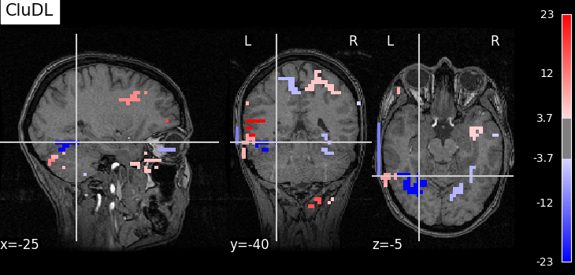
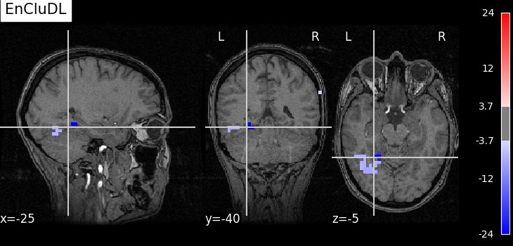

Note
Go to the end to download the full example code.
Support Recovery on fMRI Data#
This example compares methods based on Desparsified Lasso (DL) to estimate voxel activation maps associated with behavior, specifically decoder map support. All methods presented here provide statistical guarantees.
To demonstrate these methods, we use the Haxby dataset, focusing on the ‘face vs house’ contrast. We analyze labeled activation maps from a single subject to produce a brain map showing the discriminative pattern between these two conditions.
This example illustrates that in high-dimensional settings (many voxels), DL becomes impractical due to memory constraints. However, we can overcome this limitation using feature aggregation methods that leverage the spatial structure of the data (high correlation between neighboring voxels).
We introduce two feature aggregation methods that maintain statistical guarantees, though with a small spatial tolerance in support detection (i.e., they may identify null covariates “close” to non-null covariates):
Clustered Desparsified Lasso (CLuDL): combines clustering (parcellation) with statistical inference
Ensemble Clustered Desparsified Lasso (EnCluDL): adds randomization to the clustering process
EnCluDL is particularly powerful as it doesn’t rely on a single clustering choice. As demonstrated in Chevalier et al.[1], it produces relevant predictive regions across various tasks.
fetch and preprocess Haxby dataset#
We define a function that gathers and preprocesses the Haxby dataset for a given subject. Only the ‘face’ and ‘house’ conditions are kept for this example.
import numpy as np
import pandas as pd
from nilearn import datasets
from nilearn.image import mean_img
from nilearn.maskers import NiftiMasker
from sklearn.utils import Bunch
def preprocess_haxby(subject=2, memory=None):
"""Gathering and preprocessing Haxby dataset for a given subject."""
# Gathering data
haxby_dataset = datasets.fetch_haxby(subjects=[subject])
fmri_filename = haxby_dataset.func[0]
behavioral = pd.read_csv(haxby_dataset.session_target[0], sep=" ")
conditions = behavioral["labels"].values
session_label = behavioral["chunks"].values
condition_mask = np.logical_or(conditions == "face", conditions == "house")
groups = session_label[condition_mask]
# Loading anatomical image (back-ground image)
if haxby_dataset.anat[0] is None:
bg_img = None
else:
bg_img = mean_img(haxby_dataset.anat, copy_header=True)
# Building target where '1' corresponds to 'face' and '-1' to 'house'
y = np.asarray((conditions[condition_mask] == "face") * 2 - 1)
# Loading mask
mask_img = haxby_dataset.mask
masker = NiftiMasker(
mask_img=mask_img,
standardize="zscore_sample",
smoothing_fwhm=None,
memory=memory,
)
# Computing masked data
fmri_masked = masker.fit_transform(fmri_filename)
X = np.asarray(fmri_masked)[condition_mask, :]
return Bunch(X=X, y=y, groups=groups, bg_img=bg_img, masker=masker)
Gathering and preprocessing Haxby dataset for a given subject#
The preprocess_haxby function make the preprocessing of the Haxby dataset, it outputs the preprocessed activation maps for the two conditions ‘face’ or ‘house’ (contained in X), the conditions (in y), the session labels (in groups) and the mask (in masker). You may choose a subject in [1, 2, 3, 4, 5, 6]. By default subject=2.
import warnings
# Remove warnings during loading data
warnings.filterwarnings(
"ignore", message="The provided image has no sform in its header."
)
data = preprocess_haxby(subject=2)
X, y, groups, masker = data.X, data.y, data.groups, data.masker
mask = masker.mask_img_.get_fdata().astype(bool)
[fetch_haxby] Dataset found in /home/circleci/nilearn_data/haxby2001
/home/circleci/project/examples/plot_fmri_data_example.py:78: UserWarning: [NiftiMasker.fit] Generation of a mask has been requested (imgs != None) while a mask was given at masker creation. Given mask will be used.
fmri_masked = masker.fit_transform(fmri_filename)
Initializing FeatureAgglomeration object that performs the clustering#
For fMRI data taking 500 clusters is generally a good default choice.
from sklearn.cluster import FeatureAgglomeration
from sklearn.feature_extraction import image
n_clusters = 500
# Deriving voxels connectivity.
shape = mask.shape
n_x, n_y, n_z = shape[0], shape[1], shape[2]
connectivity = image.grid_to_graph(n_x=n_x, n_y=n_y, n_z=n_z, mask=mask)
# Initializing FeatureAgglomeration object.
ward = FeatureAgglomeration(n_clusters=n_clusters, connectivity=connectivity)
Making the inference with several algorithms#
Due to the very high dimensionality of the problem (close to 40,000 voxels) computing a p-value map with Desparsified Lasso would be very memory consuming and may also be inadequate since it does not take into account the spatial structure of the data.
Now, the clustered inference algorithm which combines parcellation and high-dimensional inference (c.f. References).
from copy import deepcopy
from sklearn.base import clone
from hidimstat.desparsified_lasso import DesparsifiedLasso
from hidimstat.ensemble_clustered_inference import CluDL
# number of worker
n_jobs = 3
desparsified_lasso_1 = DesparsifiedLasso(
noise_method="median",
estimator=clone(estimator),
random_state=0,
n_jobs=1,
)
cludl = CluDL(
clustering=ward, desparsified_lasso=deepcopy(desparsified_lasso_1), random_state=0
)
cludl.fit_importance(X, y)
array([ 5.90998411e-06, 5.90998411e-06, 5.90998411e-06, ...,
-1.44788141e-03, -1.44788141e-03, -1.44788141e-03], shape=(39912,))
Below, we run the ensemble clustered inference algorithm which adds a randomization step over the clustered inference algorithm (c.f. References). To make the example as short as possible we take n_bootstraps=5 which means that 5 different parcellations are considered and then 5 statistical maps are produced and aggregated into one. However you might benefit from clustering randomization taking n_bootstraps=25 or n_bootstraps=100, also we set n_jobs=n_jobs.
Fitting clustered inferences: 0%| | 0/10 [00:00<?, ?it/s]
Fitting clustered inferences: 10%|█ | 1/10 [00:00<00:02, 3.64it/s]
Fitting clustered inferences: 60%|██████ | 6/10 [00:07<00:05, 1.29s/it]
Fitting clustered inferences: 90%|█████████ | 9/10 [00:14<00:01, 1.82s/it]
Fitting clustered inferences: 100%|██████████| 10/10 [00:14<00:00, 1.50s/it]
Computing importances: 0%| | 0/10 [00:00<?, ?it/s]
Computing importances: 40%|████ | 4/10 [00:00<00:00, 30.73it/s]
Computing importances: 80%|████████ | 8/10 [00:00<00:00, 30.50it/s]
Computing importances: 100%|██████████| 10/10 [00:00<00:00, 30.65it/s]
array([ 3.46122880e-05, 3.46122880e-05, 3.46122880e-05, ...,
-3.36995934e-04, -3.36995934e-04, -3.36995934e-04], shape=(39912,))
Plotting the results#
To allow a better visualization of the disciminative pattern we will plot z-maps rather than p-value maps. Assuming Gaussian distribution of the estimators we can recover a z-score from a p-value by using the inverse survival function.
First, we set theoretical FWER target at 10%.
from hidimstat.statistical_tools.p_values import zscore_from_pval
n_samples, n_features = X.shape
target_fwer = 0.1
Now, we can plot the thresholded z-score maps by translating the p-value maps estimated previously into z-score maps and using the suitable threshold. For a better readability, we make a small function called plot_map that wraps all these steps.
from matplotlib.pyplot import get_cmap
from nilearn.plotting import plot_stat_map, show
from hidimstat.statistical_tools.p_values import zscore_from_pval
def plot_map(
data,
threshold,
title=None,
cut_coords=[-25, -40, -5],
masker=masker,
bg_img=data.bg_img,
vmin=None,
vmax=None,
):
zscore_img = masker.inverse_transform(data)
plot_stat_map(
zscore_img,
threshold=threshold,
bg_img=bg_img,
dim=-1,
cut_coords=cut_coords,
title=title,
cmap=get_cmap("bwr"),
vmin=vmin,
vmax=vmax,
)
selected_cludl = cludl.fwer_selection(fwer=target_fwer, two_tailed_test=True)
plot_map(
zscore_from_pval(cludl.pvalues_) * selected_cludl,
float(zscore_from_pval(target_fwer / 2 / n_clusters)),
title="CluDL",
)
selected_encludl = encludl.fwer_selection(fwer=target_fwer, two_tailed_test=True)
z_score_encludl = zscore_from_pval(encludl.pvalues_) * selected_encludl
plot_map(
z_score_encludl,
float(zscore_from_pval(target_fwer / 2 / n_clusters)),
"EnCluDL",
)
# Finally, calling plotting.show() is necessary to display the figure when
# running as a script outside IPython
show()
- 
- 
/home/circleci/project/examples/plot_fmri_data_example.py:222: UserWarning: You are using the 'agg' matplotlib backend that is non-interactive.
No figure will be plotted when calling matplotlib.pyplot.show() or nilearn.plotting.show().
You can fix this by installing a different backend: for example via
pip install PyQt6
from nilearn.plotting import plot_stat_map, show
Using number of clusters for multiple testing correction.
Using number of features for multiple testing correction.
Analysis of the results#
As advocated in introduction, the methods that do not reduce the original problem are not satisfying since they are too conservative. Among those methods, the only one that makes discoveries is the one that threshold the SVR decoder using a parametric approximation. However this method has no statistical guarantees and we can see that some isolated voxels are discovered, which seems quite spurious. The discriminative pattern derived from the clustered inference algorithm (CluDL) show that the method is less conservative. However, some reasonable patterns are also included in this solution. Finally, the solution provided by the ensemble clustered inference algorithm (EnCluDL) seems realistic as we recover the visual cortex and do not make spurious discoveries.
References#
Total running time of the script: (1 minutes 9.712 seconds)
Estimated memory usage: 2532 MB